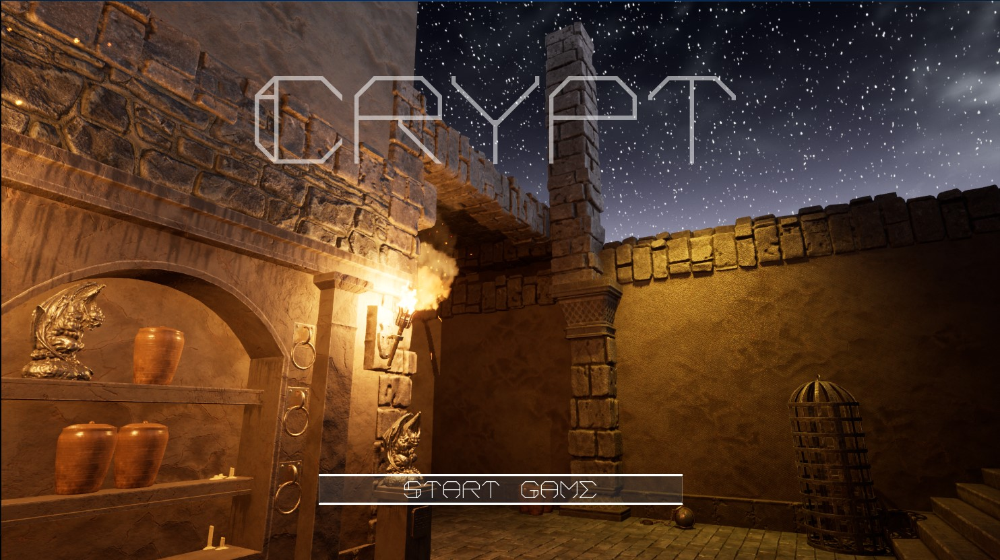

Crypt
Completed: Aug 2023
A 3D platformer with procedurally generated levels and challenging obstacles.
I love making games, writing stories,
and learning new things. This site is a hub for my personal projects,
DnD campaigns, VR/AR experiments, and more.
Business inquiries or anyone curious about my
professional experience — scroll or jump to the Resume or
Portfolio sections. Casual readers can check out the
Blog & Fun section. Enjoy exploring!
Explore my collection of personal and professional projects, covering XR, Game Development, Blog Features, and more. Use the search bar below to quickly filter projects by name, description, or tags.

Completed: Aug 2023
A 3D platformer with procedurally generated levels and challenging obstacles.

Completed: June 2022
A narrative-rich tabletop adventure with custom monsters, lore, and quest lines.
Completed: Feb 2023
Created using BigQuery and Looker Studio to track KPIs for mobile app performance.
Dynamic Software Quality Engineer with experience in mobile and desktop application testing. Skilled at test case development, performance testing, and agile collaboration. Based in Seattle, WA, seeking roles in Gameplay Engineering, Software Engineering, or Game Design.
Feb 2023 – Present | Bellevue, WA
2022 – Feb 2023 | Bellevue, WA
2021 – 2022 | Seattle, WA
Phone: (206)-472-5125
Email: taylor.philpott@gmail.com
Location: Seattle, WA
You can share DnD stories, tutorials, or anything you like in a series of posts or sub-sections.